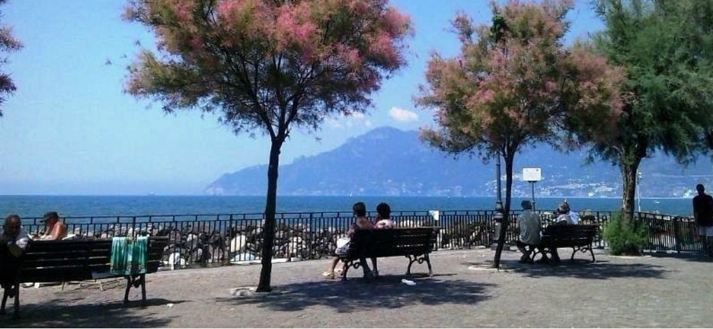
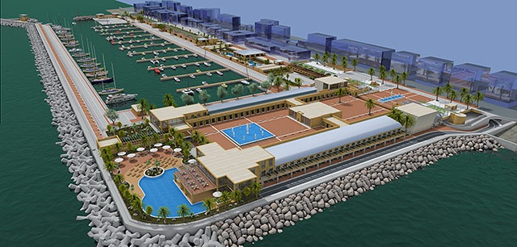

Il porticciolo oggi
Il Porticciolo, oggi, rappresenta una vera piazza sul mare, pubblica e libera dal traffico veicolare.

È uno spazio aperto e accessibile a tutti, luogo di incontro e di vita quotidiana per il quartiere. Conserva un patrimonio storico e culturale legato alle tradizioni marinare.
Non è solo un porto. È uno spazio pubblico, una memoria della città e un pezzo di costa ancora vissuto dalla comunità.
Il progetto
Il progetto prevede la trasformazione dell’attuale Porticciolo di Pastena in un nuovo porto turistico.

Sono previsti nuovi posti barca, attività commerciali, strutture ricettive, parcheggi e interventi sulle aree a terra e sul fronte mare.
Nel complesso, l’intervento interessa circa 30.000 m² di opere a terra e circa 800 metri di litorale.
Cosa cambia
Più costruzioni
Sono previste nuove strutture e attività commerciali sulle aree a terra, oltre alle opere necessarie per il nuovo porto turistico.
Le spiagge
Le spiagge attuali verrebbero cancellate e gli spazi pubblici lungo la costa trasformati.
Il fronte mare
Cambierebbe il modo in cui il quartiere si affaccia e accede al mare, con una nuova organizzazione degli spazi.
Parcheggi e viabilità
Sono previsti nuovi parcheggi e box auto, con conseguenze sulla circolazione e sull'organizzazione degli spazi del quartiere.
Cosa chiediamo
Dopo oltre 15 anni di resistenza, tutela dell’ambiente e partecipazione dei cittadini, chiediamo la revoca definitiva di un progetto di cementificazione, privatizzazione e stravolgimento di uno dei luoghi più cari alla popolazione salernitana.
Riqualificare, non cementificare
Chiediamo una riqualificazione partecipata, costruita insieme a residenti, commercianti e a chi vive il Porticciolo ogni giorno.
Un progetto che ne valorizzi l’identità e lo mantenga accessibile a tutti.
Chiediamo che le decisioni sul futuro del Porticciolo siano prese con trasparenza, coinvolgendo la comunità e tenendo conto delle sue esigenze.
Cosa proponiamo
Cosa puoi fare
Il futuro del Porticciolo riguarda tutti noi. Ecco come puoi contribuire a difenderlo.
Informati
Scopri i documenti e tutti i dettagli del progetto sul nostro sito.
Partecipa
Prendi parte alle iniziative e fai sentire la tua voce.
Condividi
Parlane con amici, familiari, vicini di quartiere. Aiutaci a diffondere.
giulemanidalporticciolo.it